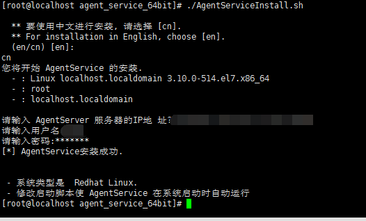
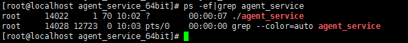

Linux服务器端安装说明
- 通过SSH连接到远程服务器，使用wget命令下载linux安装包到本地，然后使用tar命令解压。 wget -P /usr/local http://x.x.x.x/static/download/agent_service_64bit-1.6.tar.gz cd /usr/local tar -zxvf agent_service_64bit-1.6.tar.gz
- 执行安装脚本，按照脚本提示输入用户名和密码，如下图所示，直到安装程序提示AgentService安装成功。 
- 安装完成后检查程序是否正常运行。 